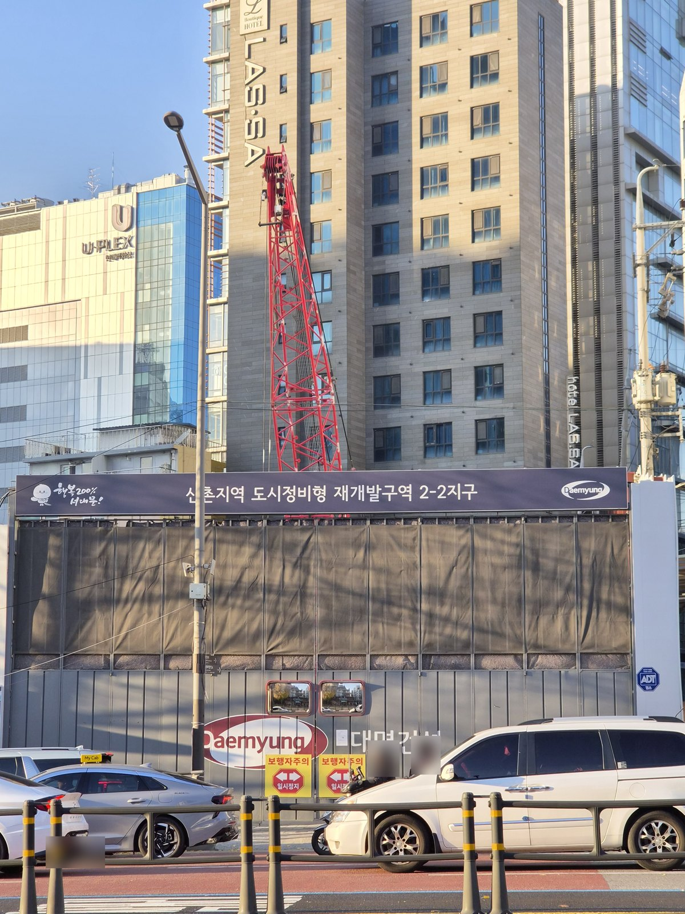
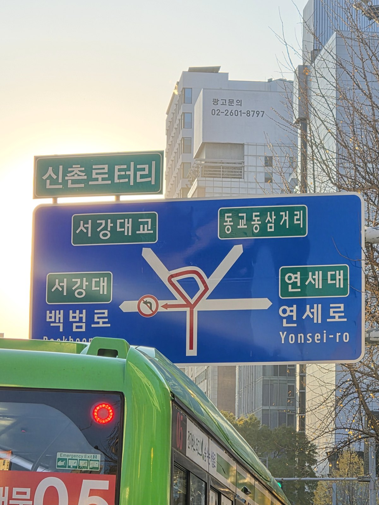

신촌로터리 현대백화점 옆,
가림막 위로
빨간 크레인이 올라갔어요.
「신촌지역 도시정비형
재개발구역 2-2지구」.
22층 오피스텔이
들어서는 자리예요.
얼마 전 분양 직원분이
사무실에 다녀가셔서,
현장 표지판이랑 같이
팩트만 정리해 볼게요.
안녕하세요. 착한언니복덕방 신촌자이엘라&마포그랑자이 (착한언니) 부동산입니다.
2014년 겨울부터 신촌 한 자리, 12년째 마포·서대문만 보고 있어요.
※ 분양가·조건은 분양 측
안내(2026.11) 기준이라
바뀔 수 있어요.
투자 권유가 아니라 정보 정리예요.
| 1. 어디에, 뭘 짓나요? |

▲ 신촌 2-2지구 현장 — 신촌로터리 대로변,
크레인이 올라간 상태
(직접 촬영 2026.11)
| 항목 | 내용 |
| 위치 | 서울 서대문구 창천동 18-42 일원 (신촌로터리·현대백화점 유플렉스 옆) |
| 용도지역 | 일반상업지역 · 지구단위계획(신촌지구) |
| 규모 | 지하 5층 ~ 지상 22층 · 철근콘크리트 |
| 용도 | 업무시설(오피스텔) · 근린생활시설 |
| 대지 / 연면적 | 1,556.90㎡ / 17,850.22㎡ |
| 건폐율 / 용적률 | 56.59% / 834.81% |
| 실수 | 오피스텔 144실 (복층 130실 · 단층 14실) · 전용 약 22~51㎡ |
| 공사기간 | 2026.1.20 ~ 2028.6.30 (입주 예정 2028.10) |
| 시행 · 시공 | 원경개발(위탁)·코리아신탁(수탁) · (주)대명건설 |
현장 건축허가표지판(서대문구청)
언론 보도(2026.11) 기준

▲ 건축허가표지판 (직접 촬영)

▲ 연세로2길 쪽 가림막 (직접 촬영)
✔ 재개발이라고 해서
아파트 단지가 아니에요.
신촌지역 도시정비형 재개발은
지구 단위로 건물 한
동씩 짓는 방식이라,
여기는 오피스텔 한 동이에요
✔ 길 건너 노고산동(마포구)은
이제 철거 단계인데,
여기는 이미 올라가는 중이에요
| 2. 분양 조건 (분양 직원 안내 기준) |
| 일정 | 내용 |
| 2024.12~2025.2 | 미주(LA) 한인 대상 우선 분양 홍보 (보도) |
| 2026.4.22 | 입주자모집공고 → 4.27 청약 · 4.30 발표 · 5.1 계약 |
| 2026.11 현재 | 분양 진행 중 (11월 언론 보도 다수) |
| 2028.10 | 입주 예정 |
청약 정보 사이트·언론 보도 기준
최신 잔여 호실과 조건은 분양사무실 확인
4월 청약 뒤에도 분양이
계속 이어지는 중이에요.
이럴 땐 처음 공고
때와 계약
조건(계약금·중도금·혜택)이
달라졌는지
꼭 물어보세요.
단지명은 에르노
플레이스 신촌이에요.
분양 측에서 받은 가격표를
전용면적 기준으로 다시 정리했어요.
| 타입 (안내 예시 호실) | 전용 | 분양가 (부가세 포함) | **전용 평당가** |
| 22A · 13호 서북향 (10~14층) | 6.7평 | 5억 4,823만 | 약 8,180만 |
| 23D · 12호 서북향 (10~14층) | 7.1평 | 5억 7,548만 | 약 8,110만 |
| 24A · 4·5·6호 동향 | 7.3평 | 6억 8,584만 ~ 7억 553만 | 약 9,400만 ~ 9,660만 |
| 37A · 1호 동향 | 11.5평 | 10억 7,308만 ~ 11억 4,855만 | 약 9,330만 ~ 9,990만 |
| 47A · 11호 남향 | 14.4평 | 13억 9,596만 ~ 15억 1,412만 | 약 9,690만 ~ 1억 510만 |
분양 측 안내 가격표 기준 (2026.11
바뀔 수 있음)
전용 평당가 = 분양가
÷ 전용평 (착한언니 계산)
같은 타입도 층·향마다 가격이 달라요
원룸 한 칸에 5억 중반부터
✔ 분양가에는 건물분 부가세가
들어 있어요
(22A 약 2,811만 원).
일반임대사업자로 등록하면
돌려받을 수 있는 구조라,
계약 전에 세무 상담을
꼭 받아 보세요
✔ 공사 완료 예정이
2028년 6월이라,
입주는 그 이후예요.
지금 계약하면
약 1년 반~2년을
기다리는 구조예요
| 3. 숫자 볼 때 속지 말아야 할 3가지 |
오피스텔 분양 자료에는
평수가 여러 개 나와요.
어떤 숫자로 보느냐에 따라 평당가가
두 배 넘게 달라져요.
| 자료에 나오는 숫자 | 뭐가 들어간 거예요? | 착한언니 기준 |
| 전용면적 | 실제 내 방 (벽 안쪽) | ✅ 비교는 이걸로 |
| 계약면적 '평형' | 전용 + 복도·주차장·기계실 등 공용 | 전용의 2배 넘게 커 보여요 → 평당가는 절반처럼 들려요 |
| '실사용' 평수 | 전용 + 발코니 + 다락 | 발코니·다락은 서비스면적 — 분양가에도, 전용에도 안 들어가요 |
✔ 다락은 높이
제한(1.5m 이하)이 있어서
방이 아니에요.
오피스텔 발코니는
실내로 확장할 수 없고요
✔ 그래서 "평당 4천만
원대"라는 말을 들으면
계약평 기준인지,
전용평 기준인지 꼭 물어보세요
| 4. 임대 수익, 직접 계산해 보세요 |
분양 상담에서 "수익률 높은
타입"이라는 말을 들으셨다면,
아래처럼 직접 계산해 보세요.
| 예시: 22A | 계산 |
| 분양가 | 5억 4,823만 |
| 가정: 보증금 1,000만 · 월세 90만 | 1년 월세 1,080만 |
| 실투자금 (분양가 − 보증금) | 5억 3,823만 |
| 연 수익률 (세전·대출 없음) | 약 2.0% |
월세는 계산 예시를 위한 가정이에요
(실제 신촌 신축 원룸 시세는 계약 전 직접 확인)
취득세 4.6%·중개보수·관리비·공실·대출이자
미반영 → 실제 수익률은 더 낮아질 수 있어요
요즘 예금 금리와 꼭 나란히 놓고
비교해 보세요.
신촌이라 공실 걱정은 덜하지만,
분양가가 수익률을
정하는 상품이에요.
| 5. 신촌 입지, 세 가지만 기억하세요 |
| 신촌 입지 | |
| ① 대학가 | 연세대·이화여대·서강대가 걸어서 닿는 거리 (홍익대도 한 정거장) — 학생·교직원·유학생 수요가 매년 새로 들어와요 |
| ② 여의도 | 신촌로터리에서 서강대교만 건너면 여의도 — 업무지구 직장인 수요 |
| ③ 강남 | 신촌역 2호선 한 번에 강남역까지 (환승 없음) · 경의중앙선 신촌역 · 공항철도 홍대입구 한 정거장 |
역·노선 기준
실제 이동 시간은
시간대·교통 상황에 따라 달라요

▲ 신촌로터리 —
서강대교(여의도)·서강대·연세대
방향이 한 교차로에 (직접 촬영)
오피스텔은 결국 누가
살러 오느냐가 제일 중요한데,
신촌은 학생 수요에
여의도·강남 직장인
수요까지 겹쳐요.
이건 신촌의 오래된 장점이에요.
| 6. 착한언니 체크 — 계약 전에 꼭 보세요 |
분양가가 적정한지
✔ 주변 신축 오피스텔
실거래가·월세와
전용 평당가로 비교해 보세요
✔ 전용률은
'전용 ÷ 계약면적'으로
계산했는지 확인해요 —
발코니·다락을 넣어 계산하면
실제보다 높게 나와요
✔ 호실별 가격표를 받아서
층·향별 차이를 보세요
세금·대출
✔ 오피스텔 취득세는
4.6%(지방교육세·농특세 포함)로
아파트와 달라요
✔ 주거용으로 쓰면 주택 수에
들어갈 수 있어서
다른 집 세금에 영향이 있어요 —
계약 전 세무 상담 권해요
✔ 중도금·잔금 대출 조건과
DSR을 미리 확인해요
임대를 생각하신다면
✔ 2028년 입주 시점에
주변
공급(노고산동 3지구·4-10지구 등)이
어떻게 겹치는지도 같이 보세요
✔ 관리비·주차
대수·근생(상가) 구성도
세입자 만족도에 영향이 커요
| 7. 정리하면 |
✔ 에르노 플레이스
신촌 (2-2지구):
창천동 18-42,
22층 오피스텔 144실,
2026.4 청약
후 지금도 분양 중,
2028.10 입주
예정 (시공 대명건설)
✔ 분양가는 전용 6.7평
5억 4,823만부터,
전용 평당 약 8,100만~1억
500만 (안내 가격표 기준)
✔ 입지는 대학가
+ 여의도 + 2호선 강남,
신촌에서 검증된 조합이에요
✔ 판단은 전용 평당가
vs 주변 신축 시세,
그리고 직접 계산한 수익률로
신촌 오피스텔 매매·임대 상담은 자이엘라점에서 도와드려요.
| 📝 착한언니 현장 노트 |
얼마 전 분양 직원분이
저희 사무소에 직접 다녀가셨어요.
그만큼 분양이 계속 진행 중이에요.
상담하면서 제일 먼저 확인하는
건 '전용면적 기준 가격'이에요.
실사용·계약 평수로 들으면
같은 집도 훨씬 싸게 느껴지거든요.
| 📊 착한언니복덕방 실거래 도구 단지 시세 · 내 예산 진단 리포트 신촌 오피스텔 · 청약까지 중개사가 매일 보는 시세표, 그대로 열어 드려요 👉 unnizip.kr/app |
새 글 알림을 받고 싶으시다면
블로그 이웃 추가 해 두세요.
길 건너 노고산동 재개발 이야기는
「신촌 노고산동 재개발
2026」에서 보세요.
🏠 방 구하기 문의는
카카오톡 채널 착한언니복덕방에
「원하는 동네·예산·입주
날짜」만 남겨 주세요.
맞는 방을 골라 드려요.
인스타그램 @goodsister4080
이런 내용을 카드뉴스로 정리해요
쉽고 꾸준하게, 꼭 부자되세요!
────────────────
출처: 현장
건축허가표지판(서대문구청, 2026.11 촬영)
분양가는 분양 측 안내
가격표(2026.11)
일정은
모집공고(2026.4.22)·언론 보도
투시도·조감도는 설계 저작물이라
싣지 않았어요
이 글은 투자 권유가 아니에요
착한언니복덕방 | 신촌자이엘라
& 마포그랑자이 부동산
4인 전원 공인중개사
중개보조원 없음
중개사무소: 신촌자이엘라부동산공인중개사사무소
대표 공인중개사: 신수경
등록번호 11410-2019-00062
소재지: 서울특별시 서대문구
대현동 104-36, B101호
연락처: 02-364-4080
카카오톡 채널:
pf.kakao.com/_xcxoBxnX
붙여넣는 법 (PC 스마트에디터 ONE)
- ① 본문 전체 복사 → 글쓰기 화면 본문에 Ctrl+V
- ② 표·굵게·글자색·형광·가운데 정렬은 그대로 들어가요 (붙여넣은 뒤 표 색이 빠지면 표 선택 → 셀 배경색만 다시 지정)
- ③ 주황 점선 문장은 인용구로 바꿔 주세요: 붙여넣은 문장 지우고 → 상단 [인용구] → 오른쪽 목록의 「문장 복사」로 붙여넣기
- ④ 사진은 붙여넣기로 안 들어가요 → 회색 「▲ 설명」 줄 바로 위에 오른쪽 「이미지 내려받기」 파일을 올려 주세요 (▲ 줄은 사진 설명으로 그대로 두면 돼요) · ✍️ 빨간 줄 = 직접 채울 자리
- ⑤ 맨 아래 법정 표시는 「내 템플릿」에 저장해 둔 서명과 같아요 — 템플릿을 썼다면 이 부분은 지워도 돼요
인용구로 바꿀 문장
- 인용구 · 기본 한 줄 요약 에르노 플레이스 신촌 · 창천동 18-42 · 22층 오피스텔 · 전용 6.7평 5억 4,800만~ · 2028.6 공사 완료 예정 · 판단은 전용 평당가로
이미지 내려받기 (직접 업로드)


발행 정보
- 시리즈: 【신촌·이대 오피스텔】 — 제목 맨 앞에 그대로 붙여요
- 제목(BEST): 【신촌·이대 오피스텔】 에르노 플레이스 신촌 분양가 정리｜원룸 5억 4천부터, 전용 평당가로 다시 계산해 봤어요
- 제목(대안): 【신촌·이대 오피스텔】 에르노플레이스 신촌 분양 2026｜신촌로터리 22층 오피스텔, 계약 전 체크 3가지
- 태그: 에르노플레이스신촌, 에르노플레이스, 신촌오피스텔분양, 신촌오피스텔, 신촌2-2지구, 창천동오피스텔, 신촌신축오피스텔, 신촌부동산, 이대부동산, 신촌공인중개사, 서대문부동산, 신촌자이엘라부동산, 대현동부동산, 착한언니복덕방
- 숫자 출처: 분양가는 고객용 가격표 사진 기준 · 대외비 표시가 있는 영업 교육자료(면적표·CG·배치도)는 사용하지 않음 — 공식 분양 공고 나오면 면적·실수 추가
- 수익률 예시: 월세 90만은 가정값 — 실제 신촌 신축 원룸 월세 확인 후 바꾸거나, 분양 측과의 관계상 부담되면 4번 섹션 빼도 돼요
- 사진 4장: 현장 크레인·허가표지판·가림막·신촌로터리 표지판 — 번호판·얼굴 블러, 투시도 패널·분양 팸플릿 표지는 제외
- 톤: 분양 광고처럼 보이지 않게 — 장점(입지)과 체크포인트(분양가·세금·공급)를 같이